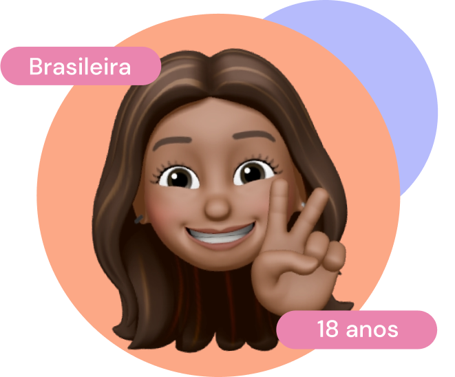

Izadora Montenegro
Estudante de Engenharia de Computação no Instituto Federal do Ceará e desenvolvedora iOS na Apple Developer Academy. Entusiasta de UX/UI design, adoro unir tecnologia e criatividade e busco projetos que desafiem minhas habilidades e expandam meu conhecimento!
Nativo
Intermediário
Iniciante
C
Java
Swift
HTML
CSS
SwiftUI
UI/UX Design
Cloudies é um aplicativo que utiliza IA generativa para auxiliar o desenvolvimento de ideias
SwiftUI
UI/UX Design
Com o objetivo de facilitar o gerenciamento corporativo, Phavo foi desenvolvido com foco em aprender UX, processos ágeis e Lean por meio de um experimento MVP.
Java
Game design
Projeto final do curso de POO em Java. SpaceCowboy é um jogo de nave 2D onde os jogadores controlam uma nave espacial, enfrentam inimigos e obstáculos, e avançam por níveis de dificuldade crescente.
(91) 991385318